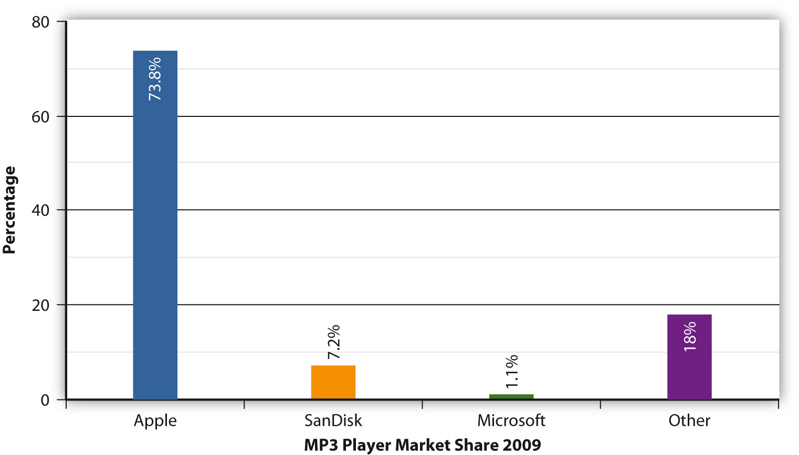
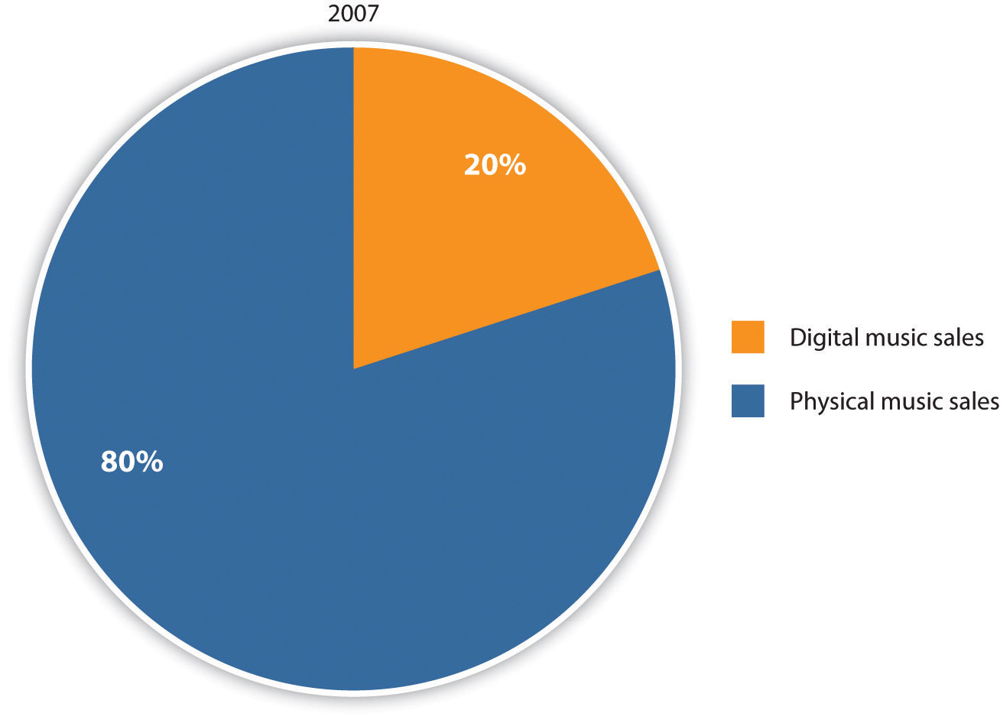

In the mid-1990s, CD sales were booming. Cassette tapes were all but obsolete, and record companies were reaping the benefits of sales to consumers who wanted their music collections in the latest technological format. This boom was a familiar step in the evolution of technology. In past decades, records seemed to have an ironclad lock on sales, but they were eventually passed by cassette sales. Cassettes, as previously mentioned, were then passed by CD sales. However, despite a few advantages in quality and convenience, there were several areas in which CDs were lacking. They were expensive for consumers to purchase, and consumers had to buy a full album even if they were only interested in listening to one or two songs on it because every album came as a complete package.
At the height of the CD revolution, new digital technology was being developed that would eliminate these disadvantages and revolutionize digital music storage. In 1989, German company Fraunhofer-Gesellshaft discovered how to compress digital audio to approximately one-tenth the size of the original audio with almost no discernable loss in quality to the average listener. Small enough to be transmitted over a modem, the so-called MP3 filesCompressed digital audio files that are small enough to transfer over the Internet while maintaining high audio quality. (the MP stands for Moving Pictures Experts Group, which is the group that sets the standard for audio and video compression and transmission, and the 3 refers to the most popular layer or scheme with the standard) could be downloaded onto a website or FTP site in a relatively short amount of time. Initially done only by a tech-savvy elite, the process of downloading and sharing audio files was a painstaking process because MP3 files were not in one centralized location. Peer-to-peerA communications model in which participants access shared files on each other’s computers via the Internet. file sharing—the process in which two or more computer systems are connected over the Internet for the purpose of sharing music or video files—became a worldwide phenomenon in 1999 with the development of centralized online file-sharing system Napster.
In 1999, Northeastern University student Shawn Fanning dropped out of school to complete work on a software project that would simplify finding and downloading MP3 files on the Internet.T. C. Doyle, “Shawn Fanning, Founder, Napster,” CRN, November 10, 2000, http://www.crn.com/news/channel-programs/18834885/shawn-fanning-founder-napster.htm;jsessionid=nqMTTQpakxKozxhpf778kw**.ecappj01. The result was a free downloadable NapsterA centralized online file-sharing system that enabled users to download and share free music. Napster was closed down for copyright infringement in 2000 and relaunched 3 years later as a subscription service. program that transformed PCs into servers for exchanging music files over the Internet. The program also sported a chat-room feature that served a community of music fans eager to discuss their favorite bands. Originally an experiment between Fanning and his friends, the program’s popularity spread through word of mouth. By the end of the first week, 15,000 people had downloaded the program.Sarah Riedel, “A Brief History of Filesharing: From Napster to Legal Music Downloads,” Associated Content from Yahoo, February 24, 2006, http://www.associatedcontent.com/article/20644/a_brief_history_of_filesharing_from_pg2.html?cat=15.
Although music fans were thrilled by their newfound ability to download free songs (albeit illegally), the record industry was not happy. In December 1999, all four major record labels, together with the Recording Industry Association of America (RIAA), launched a series of lawsuits against Fanning and his site for copyright infringement. Citing the nonpayment of royalties and the loss of revenue through lost CD sales, the RIAA also claimed that artists would be unwilling to create new songs now that they could be obtained for free. In response, Napster argued that it merely provided the software for people to share music files and no copyrighted material appeared on the site itself. In addition, Fanning claimed that the site encouraged people to go out and buy CDs based on the exposure artists received from Napster.Sarah Riedel, “A Brief History of Filesharing: From Napster to Legal Music Downloads,” Associated Content from Yahoo, February 24, 2006, http://www.associatedcontent.com/article/20644/a_brief_history_of_filesharing_from_pg2.html?cat=15.
As the number of the Napster program users grew, the lawsuit began to garner publicity. Some Napster supporters, many of them college students, viewed the legal battle as a David versus Goliath situation and rooted for Fanning to beat the corporate music giants. Most recording artists sided with the record labels, with heavy metal rock group Metallica and rap artist Dr. Dre launching their own separate lawsuits against Napster in April 2000. However, some bands discovered a way to use the site to their advantage. Alternative rock group Radiohead promoted its album Kid A by secretly releasing the record to Napster 3 weeks before its street release date, creating a wave of publicity that launched the album to the No. 1 spot on the Billboard 200 chart in October 2000.Richard Menta, “Did Napster Take Radiohead’s New Album to Number 1?” MP3newswire.net, October 28, 2000, http://www.mp3newswire.net/stories/2000/radiohead.html. Reggae-rock band Dispatch poured free recordings onto the site, increasing its fan base to such an extent that it sold out multiple nights at Madison Square Garden in early 2007.Steve Knopper, “Napster Wounds the Giant,” Rocky Mountain News, January 2, 2009, http://www.rockymountainnews.com/news/2009/jan/02/napster-wounds-the-giant/. Dispatch bassist Pete Heimbold said, “[w]hat we found was it really didn’t deter kids from coming to shows and buying CDs. In fact, I think it had the opposite effect—people heard songs off Napster and had a lot of merchandise and CDs.”Steve Knopper, “Napster Wounds the Giant,” Rocky Mountain News, January 2, 2009, http://www.rockymountainnews.com/news/2009/jan/02/napster-wounds-the-giant/.
Despite the Napster program’s many advantages, including a built-in user base of 26.4 million people, the major record labels were unable to reach a deal with the site to create any form of fee-based service. In 2007, former EMI Executive Ted Cohen said, “[t]he record labels had an opportunity to create a digital ecosystem and infrastructure to sell music online, but they kept looking at the small picture instead of the big one. They wouldn’t let go of CDs.”Seth Mnookin, “Universal’s CEO Once Called iPod Users Thieves. Now He’s Giving Songs Away,’ Wired, November 27, 2007, http://www.wired.com/entertainment/music/magazine/15-12/mf_morris?currentPage=2. A court injunction in 2000 ordered Napster to remove all copyrighted material from its servers, and within two days the website was effectively shut down. Following a bankruptcy liquidation, the Napster program was reinvented as a paid subscription service in 2003. Under its new terms, users pay a fee to access music.
Napster’s initial success resulted in a wave of similar sites emerging throughout 2000. The creators of these new services recognized that Napster’s legal problems were the result of maintaining a central file server. By keeping a list of all the users on the network, Napster was able to control its users’ activities by blocking illegal downloads. When the court ordered the service to halt illegal downloading, the absence of a central database destroyed the entire Napster network.
To avoid a similar fate, new peer-to-peer (P2P) systems adopted two different approaches. The Gnutella networkA peer-to-peer system without a centralized database. The Gnutella network includes clients such as LimeWire, BearShare, and WinMX. Because it does not have a central network, the Gnutella network would be difficult to close down., which serves clients such as LimeWire, BearShare, and WinMX, avoided maintaining a central database. Instead, it dispersed information about file locations across computer “nodes” around the world. Users were able to find each other, but the service could disclaim the ability to prevent copyright infringements. The lack of a centralized server and multiple client base meant that, unlike Napster, it would be impossible to shut down the entire Gnutella network through a simple court order. Courts would need to block all Gnutella network traffic at the Internet service provider (ISP) level of the Internet, a far trickier prospect than simply shuting down a central database.
In addition to a lack of a central database, some P2P providers set up in offshore locations to take advantage of less-restrictive copyright laws and weaker enforcement. Kazaa was initially based in the Pacific island nation of Vanuata and operated out of Australia. However, the company’s offshore location did not protect it from copyright infringement laws. After a series of legal wrangles, Kazaa was ordered to modify its software in Australia in 2005 and agreed to pay $100 million in damages to the record industry. In 2006, the site became a legal music download service.BBC News, “Kazaa Site Becomes Legal Service,” July 27, 2006, http://news.bbc.co.uk/2/hi/science/nature/5220406.stm.
Not content with pursuing providers of illegal music downloads, the RIAA also took legal action against the users of sites such as LimeWire and Kazaa. In 2003, the recording industry sued 261 American music fans for illegally sharing songs on P2P networks.David Kravets, “File Sharing Lawsuits at a Crossroads, After 5 Years of RIAA Litigation,” Wired, September 4, 2008, http://www.wired.com/threatlevel/2008/09/proving-file-sh/. Athough fines under U.S. copyright law can rise to up to $150,000 per illegally downloaded track, most of the cases were settled for much less. As of 2008, the RIAA had sued or threatened to sue more than 30,000 individuals for copyright infringement.David Kravets, “File Sharing Lawsuits at a Crossroads, After 5 Years of RIAA Litigation,” Wired, September 4, 2008, http://www.wired.com/threatlevel/2008/09/proving-file-sh/.
In an ongoing legal battle with the RIAA, Minnesota woman Jammie Thomas was found guilty of copyright infringement for a second time in 2009 and fined $1.92 million for illegally downloading 24 songs on file-sharing Kazaa website. First fined $222,000 for using the Kazaa service, the 30-year-old single mother of four refused to settle with the recording industry out of court. Thomas claimed her innocence, maintaining that she was not the Kazaa service user whose files had been detected by RIAA investigators.David Kravets, “File Sharing Lawsuits at a Crossroads, After 5 Years of RIAA Litigation,” Wired, September 4, 2008, http://www.wired.com/threatlevel/2008/09/proving-file-sh/.
The case became the first of its kind to go before a jury in 2007, and Thomas faced fines ranging from $18,000 to $3.6 million under the Copyright Act of 1976. After deliberating for 5 hours, a jury found her guilty of copyright infringement and awarded the RIAA $222,000 in damages. The verdict was thrown out a year later when a federal judge declared a mistrial. However, jurors in Thomas’s second trial found her guilty again, upping the fine to $1.92 million. A federal judge later reduced the damages to $50,000. In January 2010, the RIAA offered to close the case for $25,000, but Thomas continued to refuse to pay.David Kravets, “Settlement Rejected in ‘Shocking’ RIAA File Sharing Verdict,” Wired, January 27, 2010, http://www.wired.com/threatlevel/2010/01/settlement-rejected-in-shocking-riaa-file-sharing-verdict/.
Thomas’s case has provoked strong reactions on both sides of the debate. RIAA spokeswoman Cara Duckwork said, “[i]t is a shame that Ms. Thomas-Rasset continues to deny any responsibility for her actions rather than accept a reasonable settlement offer and put this case behind her.”David Kravets, “Settlement Rejected in ‘Shocking’ RIAA File Sharing Verdict,” Wired, January 27, 2010, http://www.wired.com/threatlevel/2010/01/settlement-rejected-in-shocking-riaa-file-sharing-verdict/. Joe Sibley, one of Thomas’s lawyers, argued, “They want to use this case as a bogeyman to scare people into doing what they want, to pay exorbitant damages.”David Kravets, “Settlement Rejected in ‘Shocking’ RIAA File Sharing Verdict,” Wired, January 27, 2010, http://www.wired.com/threatlevel/2010/01/settlement-rejected-in-shocking-riaa-file-sharing-verdict/. The RIAA is currently winding down its 6-year campaign against illegal downloaders, approximately 30,000 lawsuits in all. Instead the RIAA is focusing on creating a program with Internet providers to discontinue service to users who continue to break online copyright laws.David Kravets, “Verizon Terminating Copyright Infringers’ Internet Access,” Wired, January 20, 2010, http://www.wired.com/threatlevel/2010/01/verizon-terminating-internet-accessinternet-access/.
With the closure of the Napster program and the crackdown on illegal downloading, a void in the music distribution market opened and was almost immediately filled by fee-based online music providers. This void helped to resurrect one company many feared was declining. Apple launched the iTunes appliance programA free computer application, first lauched for the Mac computer in 2001 and later expanded to include PCs, that converts audio CDs into digital music files, organizes digital music collections, and plays Internet radio.—a free application for the Mac computer that converted audio CDs into digital music files, organized digital music collections, and played Internet radio—and the iPodA portable MP3 player, launched by Apple in 2001, that is compatible with iTunes software. The iPod is the best-selling brand of MP3 player on the market.—a portable media player compatible with the iTunes appliance program software—in 2001, and both products have dominated the market ever since. In 2003, the company signed deals with all of the major record labels and launched the iTunes Store, a virtual store that enabled people to buy and download digital music on demand. Initially featuring 200,000 songs at a cost of $0.99 each to download, the store quickly revolutionized the digital music industry. Within a week, iTunes Store customers purchased 1 million songs.Apple, “iPod + iTunes Timeline,” Apple Press Info, http://www.apple.com/pr/products/ipodhistory/. Six months later, Apple convinced the record labels to expand the service to Microsoft Windows operating system users, and by the following year, the iTunes Store had gone international. Within 5 years of its launch, the iTunes Store was the top music seller in the United States, and in February 2010, Apple celebrated its 10 billionth download.Martyn Williams, “Timeline: iTunes Store at 10 Billion,” Computerworld, February 24, 2010, http://www.computerworld.com/s/article/9162018/Timeline_iTunes_Store_at_10_billion.
Several companies have attempted to cash in on the success of iTunes appliance program, with varying results. In 2007, Internet giant Amazon.com launched the Amazon MP3 digital music download store that initially offered more than 2 million songs priced between $0.89 and $0.99.Adam Richardson, “Quick Take on Amazon’s MP3 Download Store,” Matter/Anti-Matter (blog), October 3, 2007, http://news.cnet.com/8301-13641_3-9790970-44.html. Amazon’s major selling point was its lack of digital rights management (DRM)A collection of systems used to protect the copyrights of electronic media. Apple used DRM software to limit music purchased on iTunes so that it could only be played on Apple products. It removed these restrictions in 2009. software, which enabled music downloads to be played on any hardware device. In contrast, songs downloaded through the iTunes appliance program could only be played on Apple products. Apple removed these restrictions in 2009 after negotiating an agreement with the major record labels. Despite its efforts to topple Apple from the top spot in the digital music arena, the Amazon MP3 service only commanded 8 percent of the digital music market in 2009, compared with Apple’s 69 percent of the market.NPD Group, “Digital Music Increases Share of Overall Music Sales Volume in the U.S.,” news release, August 18, 2009, http://www.npd.com/press/releases/press_090818.html. Napster has also stayed in the game by releasing a new design plan in 2009 after being purchased by Best Buy. The plan requires users to pay a fee to access all the music in its catalog. This plan has kept Napster in business; however, the company only had 1 percent to 2 percent of the market share at the beginning of 2010.Seth Weintraub, “Android Helps Amazon Triple Online Music Marketshare,” Fortune, CNN Money, May 26, 2010, http://tech.fortune.cnn.com/2010/05/26/android-helps-amazon-triple-music-marketshare/. Other online music stores are operated by Walmart, Rhapsody, and Yahoo! Music.
Once digital music technology was introduced to the world, its domination of the music industry was almost instantaneous. MP3 players have several key advantages over CD players. They are smaller and more portable, eliminating the necessity of lugging around bulky CD carrying cases. Whereas CDs can only hold a relatively small amount of data, MP3 players are able to compress thousands of songs onto a single device (this lack of packaging and manufacturing has caused disputes between artists and labels over royalties, which will be discussed later on). The lack of moving parts means MP3 players can be taken jogging or cycling without the risk of a song skipping every time the user hits a bumpy patch of road. Users are also no longer obligated to buy entire albums; instead, they can pick and choose their favorite songs from a catalog of online music.
Of the many brands of MP3 player currently available on the market, Apple’s iPod has been the dominant force in the digital music industry since its launch in 2001 (see Figure 6.15). Former Apple CEO Steve Jobs attributed the success of his product to its simple design. In a 2005 interview he said, “One of the biggest insights we have was that we decided not to try to manage your music library on the iPod, but to manage it in iTunes. Other companies tried to do everything on the device itself and made it so complicated that it was useless.”Steven Levy, “Q&A: Jobs on iPod’s Cultural Impact,” Newsweek, October 15, 2006, http://www.msnbc.msn.com/id/15262121/site/newsweek/print/1/displaymode/1098/. The iPod has also reaped the benefits of a successful marketing campaign and constant reinvention of its original format. Customers now have the choice of several different iPod models according to their need for storage space and desire for additional services such as Internet access and video-playing capability.
Figure 6.20
Since its launch in 2001, Apple’s iPod has remained the biggest-selling brand of MP3 player.Andrew Nusca, “Apples Announces New iPod Touch, Nano, Shuffle, Classic; iTunes 9,” The Toy Box Blog, ZDNet, September 9, 2009, http://www.zdnet.com/blog/gadgetreviews/apple-announces-new-ipod-touch-nano-shuffle-classic-itunes-9/7240.
One effect that Apple iTunes and other online retailers have had on the music industry is to shake up the way that profits are divided among artists and record labels. Because of the unanticipated boom in digital record sales, recording artists and their publishers were unprepared for the possibility that they might need to renegotiate their contracts to include digital downloads. Many artists discovered to their cost that their contracts predated the digital download era, leaving them open to exploitative royalty rates for digital downloads of songs and ringtones.
The very definition of digital royalties is still under negotiation—should a download be classified as licensed use of an artist’s music (which nets the artist approximately 50 percent of the download fee in royalties), or should it be classified as a retail sale (which nets the artist approximately 12 percent of the download fee in royalties)?Sean Michaels, “Eminem Sues Universal Over Digital Royalties,” Guardian (London), February 25, 2009, http://www.guardian.co.uk/music/2009/feb/25/eminem-universal-digital-royalties-lawsuit. The answer depends on the contractual agreement between artists and record labels. In 2009, rapper Eminem’s publishing company FBT Productions sued Universal Music Group for $1.6 million of unpaid royalties, arguing that the downloads should fall under the “licensing” agreements that cover physical releases such as CDs, rather than the “distribution” agreements put forth by Universal Music Group.Sean Michaels, “Eminem Sues Universal Over Digital Royalties,” Guardian (London), February 25, 2009, http://www.guardian.co.uk/music/2009/feb/25/eminem-universal-digital-royalties-lawsuit. A jury agreed that a song sold online is no different from a song bought in a store and ruled in favor of the record label.
Because online retailers such as Apple are responsible for the marketing, management, and delivery of downloaded music, record labels’ overheads are much lower. This new industry trend has prompted many artists and publishers to demand a bigger share of labels’ profits. As of 2010, a $0.99 download from the iTunes appliance program generates $0.30 for Apple and $0.70 for the record label, of which $0.09 goes to the songwriter and publisher as a standard mechanical royalty.Chloe Albanesius, “Music-Download Royalty Rates Left Unchanged,” PC Magazine, October 2, 2008, http://www.pcmag.com/article2/0,2817,2331598,00.asp.
The burgeoning popularity of digital music has drastically reduced revenue brought in from CD sales since 2001. Although many people have switched from illegally downloading to purchasing music on digital stores, paid digital downloads have not yet begun to make up for the loss of revenue from CD sales, and illegal downloads remain a problem for the recording industry. According to online download tracker BigChampagne Media Measurement, unauthorized downloads still represent about 90 percent of the market.David Goldman, “Music’s Lost Decade: Sales Cut in Half,” CNN, February 3, 2010, http://money.cnn.com/2010/02/02/news/companies/napster_music_industry/index.htm. With album sales declining at a rate of 8 percent a year, music executives are trying to figure out how to stem the flow of money flooding out of the CD sales market. Former head of Yahoo! Music David Goldberg said, “The digital music business is a war of attrition that nobody seems to be winning. The CD is still disappearing, and nothing is replacing it in entirety as a revenue generator.”David Goldman, “Music’s Lost Decade: Sales Cut in Half,” CNN, February 3, 2010, http://money.cnn.com/2010/02/02/news/companies/napster_music_industry/index.htm. In 2009, digital revenue sales rose and were well on the way to equaling CD sales, which were on the decline.
Figure 6.21
Digital Music Sales versus Physical Music Sales.Lee Graham, “Digital Music Increases Share of Overall Music Sales Volume in the U.S.,” news release, NPD Group, August 18, 2009, http://www.npd.com/press/releases/press_090818.html.
To partially make up for lost sales, the music industry has been generating revenue through licensing fees, including fees for ringtones, music played on Internet radio stations such as MySpace Music and Pandora, and music videos on the YouTube video-sharing website that is owned by Google. In 2009, digital licensing revenue reached $84 million and continues to grow.David Goldman, “Music’s Lost Decade: Sales Cut in Half,” CNN, February 3, 2010, http://money.cnn.com/2010/02/02/news/companies/napster_music_industry/index.htm. Meanwhile, recording artists are focusing their attention on live performances and merchandise, which have become their main source of revenue. Demand for concert tickets rose at least 7 percent in 2008 to $4.2 billion, according to touring industry trade magazine Pollstar.Ben Sisario, “Music Sales Fell in 2008, but Climbed on the Web,” New York Times, December 31, 2008, http://www.nytimes.com/2009/01/01/arts/music/01indu.html.
Figure 6.22

Artists such as Nine Inch Nails and Radiohead are abandoning the traditional music industry model in favor of marketing their songs directly to fans.
Over the past few years, the Internet has begun to level the proverbial playing field between major and independent record labels. Exemplifying how smaller indie labels are able to latch on to trends more quickly than the Big Four, indies have embraced new technology, including blogging, online video sites, and online social networking sites, as a means of promoting their music, while the major labels have fallen behind the curve. With social networking sites enabling artists to communicate directly with their fans, the need for extensive financial backing or an industry middleman is all but eliminated. Now, artists can upload their music onto a social networking site for free and generate record sales purely through word of mouth.
Although a few indie artists have become household names entirely through the buzz generated on social networking sites, many others find that they need some guidance. The direct-to-fanBusiness model used by independent artists and labels to market and distribute their music directly to fans, bypassing major record labels. New Internet technology has made it possible for artists to use the direct-to-fan model successfully. It has been embraced by high-profile bands such as Radiohead and Nine Inch Nails. business model has created opportunities for web-based companies such as Nimbit and ReverbNation, which provide software that enables independent artists and record labels to market their music online, keep track of sales, create demand for their music, and communicate with fans. The companies offer social networking applications that enable fans to purchase music directly from the artists rather than being redirected to a third-party website. Other advantages for bands include automatic updates to fans across a variety of networking sites, digital distribution through the iTunes appliance program and other stores, and real-time sales updates.
Many established artists have also embraced the direct-to-fan business model. In 2007, Nine Inch Nails frontman Trent Reznor announced that the band was splitting from its contractual obligations to Universal Music Group to distribute its next albums independently. Well known for his vocal distaste of major record labels and their profiteering, Reznor encouraged fans in Australia to steal his album Year Zero because he believed it was priced too highly there.“Trent Reznor Blasts Label,” SPIN, May 15, 2007, http://www.spin.com/articles/trent-reznor-blasts-label. Commenting on the state of the music industry in a 2007 interview he said, “I’ve got a battle where I’m trying to put out quality material that matters and I’ve got fans that feel it’s their right to steal it and I’ve got a company that’s so bureaucratic and clumsy and ignorant and behind the times they don’t know what to do, so they rip the people off.”Neala Johnson, “Q & A with Trent Reznor of Nine Inch Nails,” Herald Sun (Melbourne), May 17, 2007, http://www.heraldsun.com.au/entertainment/music/q-a-with-trent-reznor-of-nine-inch-nails/story-e6frf9hf-1111113550202. Following the band’s split with Universal, they released studio album The Slip as a free digital download in 2008. Reznor stated, “[t]his one’s on me,” on his website, thanking fans for their loyalty. The album was downloaded 1.4 million times within the first 6 weeks of its release.F. Daniel Kent, “The Upward Spiral of Trent Reznor,” Dishmag, April 2011, http://dishmag.com/issue120/music-film/13777/the-upward-spiral-of-trent-reznor/. A similar technique used by tech-savvy alternative band Radiohead reaped even higher rewards in 2007, when its retail release of In Rainbows entered the album chart at No. 1 even though the digital version had been offered online at a price of the customer’s choosing several months earlier (see Chapter 11 "The Internet and Social Media" for more information about Radiohead’s In Rainbows release).Lars Brandle, “‘In Rainbows’ Looms for U.K. No. 1,” Billboard, January 2, 2008, http://www.billboard.com/news/in-rainbows-looms-for-u-k-no-1-1003690356.story#/news/in-rainbows-looms-for-u-k-no-1-1003690356.story. The web-based direct release model allows bands such as Radiohead and Nine Inch Nails to obtain vital information about their fan bases—including email addresses—that they can use for future promotions. Whether or not the practice proves to be a passing fad, the traditional music industry model is shifting as new technology makes it easier for artists to communicate directly with their fans.
Visit the Apple website (http://www.apple.com/) and compare its digital music services and products with those of its nearest competitors. For music, look at Amazon (http://www.amazon.com/), Yahoo! Music (http://new.music.yahoo.com/), and Napster (http://www.napster.com). How do the prices and experiences differ? For MP3 players, look at Sony (http://www.sony.com), Philips (http://www.usa.philips.com/), and RCA (http://www.rca.com).
Review Questions
Questions for Section 6.1 "The Evolution of Popular Music"
Questions for Section 6.2 "The Reciprocal Nature of Music and Culture"
Questions for Section 6.3 "Current Popular Trends in the Music Industry"
Questions for Section 6.4 "Influence of New Technology"
Although many traditional music industry careers are in decline as a result of poor CD sales and the impact of new technology, changes within the industry have created new opportunities. As artists turn away from recorded music and focus on live performances, demand for concert tickets continues to rise. One possible career path in the music industry is that of a concert promoter. Read about the demands and expectations of a concert promoter at http://entertainment.howstuffworks.com/concert-tour2.htm. Once you have familiarized yourself with the material, read about the personal experiences of concert promoter David Werlin at http://www.bankrate.com/brm/news/advice/19990701a.asp and answer the following questions: